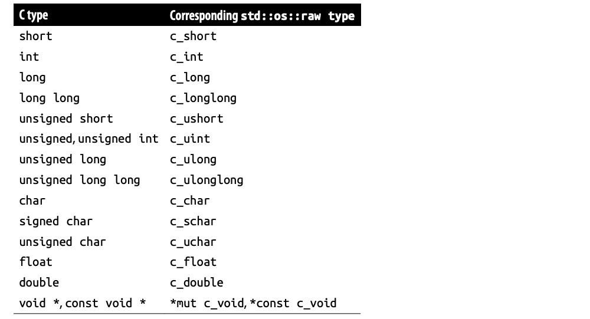

【Rust】Foreign Function
世界上的每个程序并非都是用 Rust 编写的，我们希望能够在我们的 Rust 程序中使用许多用其他语言实现的关键库和接口。Rust 的外部函数接口 (FFI) 允许 Rust 代码调用用 C 编写的函数，也可以是 C++。由于大多数操作系统都提供 C 接口，Rust 的外部函数接口允许立即访问各种低级功能。
在本章中，我们将编写一个与 libgit2 链接的程序，libgit2 是一个用于与 Git 版本控制系统一起工作的 C 库。首先，我们使用前一章中展示的 unsafe 特性展示直接从 Rust 使用 C 函数的例子，然后，我们将展示如何构建 libgit2 的安全接口，灵感来自开源 git2-rs。本文假设你熟悉 C 以及编译和链接 C 程序的机制，还假设熟悉 Git 版本控制系统。
现实中确实存在用于与许多其他语言进行通信的 Rust 包，包括 Python、JavaScript、Lua 和 Java。这里没有篇幅介绍它们，但归根结底，所有这些接口都是使用 C 外来函数接口构建的。
通用数据表示
Rust 和 C 的共同点是机器语言，所以为了预测 Rust 值在 C 代码中的样子，反之亦然，需要考虑它们的机器级表示。在该书中，强调了值是如何在内存中实际表示的，所以可能已经注意到 C 和 Rust 的数据世界有很多共同点：Rust 的 usize 和 C 的 size_t 是相同的，结构体在两种语言中基本上也是相同的。为了在 Rust 和 C 类型之间建立对应关系，我们将从基本类型开始，然后逐步发展到更复杂的类型。
鉴于其主要用作系统编程语言，C 对其类型的表示一直出人意料地松散，一个 int 通常为 32 位长，但可能更长，或短至 16 位。C char 可以有符号或无符号，等等。为了应对这种可变性，Rust 的 std::os::raw 模块定义了一组 Rust 类型，这些类型保证与某些 C 类型具有相同的表示形式，它们涵盖了原始整数和字符类型。如下图所示：

-
除了
c_void，这里所有的Rust类型都是一些原始Rust类型的别名：例如，c_char是i8或u8； -
Rust的bool等价于C/C++的布尔值； -
Rust的32位char类型不是wchar_t的类似物，wchar_t的宽度和编码因实现而异。C的char32_t类型更接近，但它的编码仍然不能保证是Unicode； -
Rust的原始usize和isize类型与C的size_t和ptrdiff_t具有相同的表示； -
C和C++指针和C++引用对应于Rust的原始指针类型*mut T和*const T； -
从技术上讲，
C标准允许实现使用Rust没有相应类型的表示：36位整数、带符号值的符号和大小表示等。实际上，在Rust被移植到的每个平台上，每个常见的C整数类型在Rust中都有一个匹配项；
要定义与 C 结构兼容的 Rust 结构类型，可以使用 #[repr(C)] 属性。将 #[repr(C)] 放在结构定义上方要求 Rust 在内存中排布结构体的字段，就像 C 编译器排布 C 结构类型一样。例如，libgit2 的 git2/errors.h 头文件定义了以下 C 结构体，以提供有关先前报告的错误的详细信息：
1 | typedef struct { |
可以定义具有相同表示的 Rust 类型，如下所示：
1 | use std::os::raw::{c_char, c_int}; |
#[repr(C)] 属性仅影响结构本身的布局，而不影响其各个字段的表示，因此要匹配 C 结构，每个字段也必须使用类 C 类型：*const c_char 对应于 char *，c_int 表示 int等等。
在这种特殊情况下，#[repr(C)] 属性可能不会改变 git_error 的布局。但是，尽管 C 和 C++ 保证结构的成员按照声明的顺序出现在内存中，每个成员都位于不同的地址，但 Rust 对字段重新排序以最小化结构的整体大小，并且零大小的类型不占用空间。#[repr(C)] 属性告诉 Rust 遵循 C 对给定类型的规则。
还可以使用 #[repr(C)] 来控制 C 风格枚举的表示：
1 |
|
如果没有 #[repr(C)]，Rust 将使用单个字节来表示 git_error_code 枚举，使用#[repr(C)]，Rust 使用一个 C int 大小的值，就像 C 一样。
你也可以要求 Rust 给一个枚举与某个整数类型相同的表示。以 #[repr(i16)] 开始前面的定义会给你一个 16 位类型，它与以下 C++ 枚举具有相同的表示：
1 |
|
如前所述，#[repr(C)] 也适用于联合体，#[repr(C)] 联合体的字段总是从联合体内存的第一位开始——索引是 0。
假设你有一个 C 结构体，它使用一个 union 来保存一些数据和一个 tag 值来指示应该使用 union 的哪个字段，类似于 Rust 枚举。
1 |
|
Rust 代码可以通过将 #[repr(C)] 应用于枚举、结构和 union 类型，并使用 match 语句根据tag在更大的结构中选择union字段来与此结构体互操作：
1 |
|
使用这种技术，即使是复杂的结构体也可以轻松地跨 FFI 边界使用。
在 Rust 和 C 之间传递字符串有点困难，C 将字符串表示为指向字符数组的指针，并且以空字符终止。另一方面，Rust 将字符串的长度显式存储在字符串的字段或胖引用 &str 的第二个机器字，Rust 字符串不是以 null 结尾的。事实上，它们可能在其内容中包含空字符，就像任何其他字符一样。
这意味着不能将 Rust 字符串作为 C 字符串借用：如果将 C 代码指针传递给 Rust 字符串，它可能会将嵌入的空字符误认为字符串的结尾，或者在结尾处寻找终止的空字符不在那里。换个方向，你可以借用一个 C 字符串作为 Rust 的 &str，只要它的内容是有效的 UTF-8。
这种情况有效地迫使 Rust 将 C 字符串视为完全不同于 String 和 &str 的类型。在 std::ffi 模块中，CString 和 CStr 类型表示拥有和借用的以空值结尾的字节数组。与 String 和 str 相比，CString 和 CStr 上的方法相当有限，仅限于构造和转换为其他类型。
定义外部函数和变量
extern 块声明了在其他库中定义的函数或变量，最终的 Rust 可执行文件将与之链接。例如，在大多数平台上，每个 Rust 程序都链接到标准 C 库，因此我们可以像这样告诉 Rust 库的 strlen 函数：
1 | use std::os::raw::c_char; |
这为 Rust 提供了函数的名称和类型，同时将定义留待稍后链接。
Rust 假设在 extern 块中声明的函数使用 C 约定来传递参数和接受返回值，它们被定义为不安全的函数。这些是 strlen 的正确选择：它确实是一个 C 函数，并且它在 C 中的规范要求向它传递一个指向正确终止字符串的有效指针，这是 Rust 无法强制执行的规约。（几乎任何接受原始指针的函数都必须是 unsafe：安全的 Rust 可以从任意整数构造原始指针，而解引用这样的指针将是未定义的行为。）
使用这个 extern 块，我们可以像调用任何其他 Rust 函数一样调用 strlen：
1 | use std::os::raw::c_char; |
CString::new 函数构建一个以 null 结尾的 C 字符串。它首先检查它的参数是否有嵌入的空字符，因为这些字符不能用 C 字符串表示，如果找到任何字符则返回一个错误。否则，它会在末尾添加一个空字节并返回一个拥有结果字符的 CString。
CString::new 的成本取决于你传递给它的类型，它接受任何实现了Into<Vec<u8>的东西。传递一个&str需要一个分配和一个拷贝，因为转换为Vec<u8>会建立一个堆分配的字符串拷贝给vector来拥有。但是通过值传递一个字符串只是消耗了字符串并接管了它的缓冲区，所以除非附加空字符迫使缓冲区被调整大小，否则转换根本就不需要复制文本或分配。
CString 取消对 CStr 的引用，其 as_ptr 方法返回指向字符串开头的 *const c_char，这是 strlen 期望的类型。在这个例子中，strlen 遍历字符串，找到 CString::new 放置在那里的空字符，并返回长度，作为字节数。
还可以在外部块中声明全局变量，POSIX 系统有一个名为 environ 的全局变量，它保存进程的环境变量的值。在 C 中，它被声明为：
1 | extern char **environ; |
在 Rust 中可以这样做：
1 | use std::ffi::CStr; |
在确保 environ 有第一个元素之后，代码调用 CStr::from_ptr 来构建一个借用它的 CStr。to_string_lossy 方法返回一个 Cow<str>：如果 C 字符串包含有效的 UTF-8，则 Cow 将其内容作为 &str 借用，不包括终止的空字节。否则，to_string_lossy 会复制堆中的文本，用官方的 Unicode 替换字符 � 替换格式错误的 UTF-8 序列，并以此构建拥有所有权的 Cow。无论哪种方式，结果都会实现 Display，因此可以使用 {} 格式参数打印它。
使用库中的函数
要使用特定库提供的函数，可以在 extern 块顶部放置一个 #[link] 属性，该属性命名库 Rust 应该链接可执行文件。例如，这里有一个程序调用 libgit2 的初始化和 shutdown 方法，但没有其他的：
1 | use std::os::raw::c_int; |
extern 块像以前一样声明了 extern 函数。 #[link(name ="git2")] 属性在 crate 中留下一个注释，大意是当 Rust 创建最终的可执行文件或共享库时，它应该链接到 git2 库。Rust 使用系统链接器来构建可执行文件，在 Unix 上，这会在链接器命令行上传递参数 -lgit2，在 Windows 上，它通过 git2.LIB。
#[link] 属性也可以在库中使用，当你构建一个依赖于其他 crate 的程序时，Cargo 会从整个依赖图中收集链接注释，并将它们全部包含在最终链接中。
在此示例中，如果您想在自己的机器上进行操作，则需要自己构建 libgit2。 这里使用了 libgit2 版本 0.25.1。要编译 libgit2，需要安装 CMake 构建工具和 Python 语言，这里我们使用了 CMake 版本 3.8.0 和 Python 版本 2.7.13。
构建 libgit2 的完整说明可在其网站上找到，但它们非常简单，我们将在此处展示要点。在 Linux 上，假设已经将库的源代码解压缩到目录 /home/jimb/libgit2-0.25.1 中：
$ cd /home/jimb/libgit2-0.25.1
$ mkdir build
$ cd build
$ cmake ..
$ cmake --build .
在 Linux 上，这会生成一个共享库 /home/jimb/libgit2-0.25.1/build/libgit2.so.0.25.1，其中包含指向它的通常嵌套的符号链接，包括一个名为 libgit2.so 的文件。在 macOS 上，结果相似，但库名为 libgit2.dylib。
在 Windows 上，事情也很简单，假设已将源代码解压缩到目录 C:\Users\JimB\libgit2-0.25.1。 在 Visual Studio 命令提示符下：
> cd C:\Users\JimB\libgit2-0.25.1
> mkdir build
> cd build
> cmake -A x64 ..
> cmake --build .
这些命令与在 Linux 上使用的命令相同，不同之处在于在第一次运行 CMake 时必须请求 64 位构建以匹配 Rust 编译器。(如果你已经安装了 32 位 Rust 工具链，那么你应该在第一个 cmake 命令中省略 -A x64 标志。）这会在目录 C:\Users\JimB\libgit2-0.25.1\build\Debug 生成一个名为 git2.LIB 和 git2.DLL 的文件。（除了 Windows 有很大不同的地方，其余说明均针对 Unix。）
在单独的目录中创建 Rust 程序：
$ cd /home/jimb
$ cargo new --bin git-toy
Created binary (application) `git-toy` package
将之前的代码放在 src/main.rs 中，然后尝试构建它，Rust 不知道去哪里找这个 libgit2，所以就会：
$ cd git-toy
$ cargo run
Compiling git-toy v0.1.0 (/home/jimb/git-toy)
error: linking with `cc` failed: exit code: 1
|
= note: /usr/bin/ld: error: cannot find -lgit2
src/main.rs:11: error: undefined reference to 'git_libgit2_init'
src/main.rs:12: error: undefined reference to 'git_libgit2_shutdown'
collect2: error: ld returned 1 exit status
error: aborting due to previous error
error: could not compile `git-toy`.
To learn more, run the command again with --verbose.
可以通过编写构建脚本告诉 Rust 在哪里搜索库，Rust 代码在构建时编译并运行 Cargo。构建脚本可以做各种各样的事情：动态生成代码，编译 C 代码以包含在 crate 中等等。在这种情况下，只需要在可执行文件的链接命令中添加一个库搜索路径。当 Cargo 运行构建脚本时，它会解析构建脚本的输出以获取此类信息，因此构建脚本只需将链接的文件位置信息打印到它的标准输出。
要创建构建脚本，请在与 Cargo.toml 文件相同的目录中添加一个名为 build.rs 的文件，其内容如下：
1 | fn main() { |
这是 Linux 的正确路径，在 Windows 上，您可以将文本 native= 后面的路径更改为 C:\Users\JimB\libgit2-0.25.1\build\Debug。（为了让这个例子简单，我们偷工减料；在实际应用程序中，应该避免在构建脚本中使用绝对路径。我们在本节末尾引用了说明如何执行此操作的文档。）
现在几乎可以运行该程序了，在 macOS 上它可以立即工作，在 Linux 系统上，您可能会看到类似以下内容：
$ cargo run
Compiling git-toy v0.1.0 (/tmp/rustbook-transcript-tests/git-toy)
Finished dev [unoptimized + debuginfo] target(s)
Running `target/debug/git-toy`
target/debug/git-toy: error while loading shared libraries:
libgit2.so.25: cannot open shared object file: No such file or directory
这意味着，尽管 Cargo 成功地将可执行文件与库链接起来，但它不知道在运行时在哪里可以找到共享库。Windows 通过弹出一个对话框报告此故障。 在 Linux 上，必须设置 LD_LIBRARY_PATH 环境变量：
$ export LD_LIBRARY_PATH=/home/jimb/libgit2-0.25.1/build:$LD_LIBRARY_PATH
$ cargo run
Finished dev [unoptimized + debuginfo] target(s) in 0.0 secs
Running `target/debug/git-toy`
在 MacOS 上可能需要设置 DYLD_LIBRARY_PATH，在 windows 上需要设置 PATH 环境变量：
> set PATH=C:\Users\JimB\libgit2-0.25.1\build\Debug;%PATH%
> cargo run
Finished dev [unoptimized + debuginfo] target(s) in 0.0 secs
Running `target/debug/git-toy`
>
自然，在已部署的应用程序中，希望避免为了查找库的代码而必须设置环境变量，一种替代方法是将 C 库静态链接到 crate 中。这会将库的目标文件与 crate 的 Rust 代码的目标文件和元数据一起复制到 crate 的 .rlib 文件中。
根据 Cargo 约定，提供对 C 库的访问的 crate 应命名为 LIB-sys，其中 LIB 是 C 库的名称，例如 libsqlite3-sys。一个 *-sys crate 应该只包含静态链接的库，和包含extern块以及类型定义的 Rust 模块。更高级别的接口则属于依赖于 *-sys 的 crate。这允许多个上游 crate 依赖于同一个 *-sys crate，假设有一个版本的 *-sys crate 可以满足每个人的需求。
有关 Cargo 支持构建脚本和与系统库链接的完整详细信息，请参阅在线 Cargo 文档。它展示了如何避免构建脚本中的绝对路径、控制编译标志、使用 pkg-config 等工具。git2-rs 也提供了很好的例子。
libgit2 的原生接口
弄清楚如何正确使用 libgit2 分为两个问题：
-
在
Rust中使用libgit2函数需要什么？ -
我们如何围绕它们构建一个安全的
Rust接口？
我们将一次一个地回答这些问题，在本节中，我们将编写一个程序，该程序本质上是一个巨大的不安全块，其中充满了非惯用的 Rust 代码，反映了混合语言中固有的类型系统和约定的冲突，我们将其称为原生接口，代码会很混乱，但它会让 Rust 代码使用 libgit2 必须执行的所有步骤变得清晰。
然后，在下一节中，我们将构建一个安全的 libgit2 接口，使用 Rust 的类型来执行 libgit2 强加给用户的规约。幸运的是，libgit2 是一个精心设计的 C 库，所以 Rust 的安全要求迫使我们提出的问题都有很好的答案，我们可以构建一个惯用的 Rust 接口，没有不安全的函数。
我们将编写的程序非常简单：它将路径作为命令行参数，在那里打开 Git 存储库，并打印出头部提交。对于原生接口，程序最终将需要比我们之前使用的更大的来自 libgit2 的函数和类型集合，因此将 extern 块移动到它自己的模块中是有意义的。我们将在 git-toy/src 中创建一个名为 raw.rs 的文件，其内容如下：
1 |
|
这里的每个 item 都是根据 libgit2 自己的头文件中的声明。例如，libgit2-0.25.1/include/git2/repository.h 包含以下声明：
1 | extern int git_repository_open(git_repository **out, const char *path); |
此函数尝试在路径打开 Git 存储库。如果一切顺利，它会创建一个 git_repository 对象，并将指向它的指针存储在 out 指向的位置，等效的 Rust 声明如下：
1 | pub fn git_repository_open(out: *mut *mut git_repository, path: *const c_char) -> c_int; |
libgit2 公共头文件使用 typedef 定义了 git_repository，但它是不完整的结构体类型：
1 | typedef struct git_repository git_repository; |
由于这种类型的详细信息对库来说是私有的，因此公共头文件永远不会定义 struct git_repository，从而确保库的用户永远不能自己构建这种类型的实例。 Rust 中不完整结构类型的一种可能类似物是：
1 | pub struct git_repository { _private: [u8; 0] } |
这是一个结构体类型，包含一个没有元素的数组。 因为 _private 字段不是 pub，所以这种类型的值不能在这个模块之外构造，它完美地反映了只有 libgit2 应该构造的 C 类型，并且只能通过原始指针进行操作。
手工编写大的外部块可能是一件苦差事。如果您正在为复杂的 C 库创建 Rust 接口，可能想尝试使用 bindgen，它具有可以从构建脚本中使用的函数来解析 C 头文件并自动生成相应的 Rust 声明。
接下来我们将完全重写 main.rs。 首先，我们需要声明raw模块：
1 | mod raw; |
根据 libgit2 的约定，易错函数返回一个整数代码，成功时为正数或者 0，失败时返回负数。如果发生错误，giterr_last 函数将返回一个指向 git_error 结构体的指针，该结构体提供有关出错的更多详细信息。libgit2 拥有这个结构，所以我们不需要自己释放它，但它可能会被我们进行的下一个库调用覆盖。适当的 Rust 接口将使用 Result，但在原始版本中，我们希望按原样使用 libgit2 函数，因此我们必须让自己的函数来处理错误：
1 | use std::ffi::CStr; |
我们将用这个函数检查 libgit2 的调用结果，例如：
1 | check("initializing library", raw::git_libgit2_init()); |
这使用了之前使用的相同 CStr 方法：from_ptr 从 C 字符串构造 CStr，to_string_lossy 将其转换为 Rust 可以打印的东西。接下来，我们需要一个函数来打印commit：
1 | unsafe fn show_commit(commit: *const raw::git_commit) { |
给定一个指向 git_commit 的指针，show_commit 调用 git_commit_author 和 git_commit_message 来检索它需要的信息。这两个函数遵循 libgit2 文档解释如下的约定：
If a function returns an object as a return value, that function is a getter and the object’s lifetime is tied to the parent object.
在 Rust 术语中，author和message是从commit中借用的：show_commit 不需要自己释放它们，但在释放commit后它不能保留它们。由于这个 API 使用原生指针，Rust 不会为我们检查它们的生命周期。
前面的代码假定这些字段包含 UTF-8 文本，这并不总是正确的，Git 也允许其他编码，为简洁起见，我们将在此处忽略这些问题。
我们程序的main函数如下：
1 | use std::ffi::CString; |
这从处理路径参数和初始化库的代码开始，所有这些我们以前都见过。第一个新颖的代码是这样的：
1 | let mut repo = ptr::null_mut(); |
对 git_repository_open 的调用尝试在给定路径打开 Git 存储库。如果成功，它会为其分配一个新的 git_repository 对象并将 repo 设置为指向该对象。Rust 隐式地将引用强制转换为原始指针，因此在此处传递 &mut repo 提供了调用所期望的 *mut *mut git_repository。
这显示了另一个正在使用的 libgit2 约定（来自 libgit2 文档）：
Objects which are returned via the first argument as a pointer-to-pointer are owned by the caller and it is responsible for freeing them.
在 Rust 术语中，像 git_repository_open 这样的函数将新值的所有权传递给调用者。接下来，考虑查找存储库当前最新的 commit 对象hash 的代码：
1 | let oid = { |
git_oid 类型存储一个对象标识符——一个 160 位的哈希码，Git 在内部（以及在其令人愉悦的用户界面中）使用它来识别提交、文件的单个版本等。对 git_reference_name_to_id 的调用会查找当前“HEAD”提交的对象标识符。
在 C 中，通过将指向变量的指针传递给填充其值的某个函数来初始化变量是完全正常的，这就是 git_reference_name_to_id 期望如何处理它的第一个参数。但是 Rust 不会让我们借用对未初始化变量的引用。我们可以用零初始化 oid，但这是一种浪费：存储在那里的任何值都将被简单地覆盖。
可以要求 Rust 给我们未初始化的内存，但是因为在任何时候读取未初始化的内存都是即时的未定义行为，Rust 提供了一个抽象，MaybeUninit，以简化它的使用。MaybeUninit<T> 告诉编译器为你的类型 T 留出足够的内存，但不要碰它，直到你说这样做是安全的。虽然此内存归 MaybeUninit 所有，但编译器还将避免某些优化，这些优化可能会导致未定义的行为，即使代码中没有对未初始化内存的任何显式访问。
MaybeUninit 提供了一个方法 as_mut_ptr()，它产生一个 *mut T 指向它包装的可能未初始化的内存。通过将该指针传递给初始化内存的外部函数，然后在 MaybeUninit 上调用 unsafe 方法 assume_init 以生成完全初始化的 T，可以避免未定义的行为，而不会产生初始化和立即丢弃值的额外开销。assume_init 是不安全的，因为在不确定内存是否实际初始化的情况下在 MaybeUninit 上调用它会立即导致未定义行为。
在这种情况下，它是安全的，因为 git_reference_name_to_id 初始化了 MaybeUninit 拥有的内存。我们也可以将 MaybeUninit 用于 repo 和 commit 变量，但由于这些只是单个字，我们只需将它们初始化为 null：
1 | let mut commit = ptr::null_mut(); |
这需要commit的对象标识符并查找实际的commit，成功时将一个 git_commit 指针存储在commit中。
main 函数的其余部分应该是不言自明的。它调用前面定义的 show_commit 函数，释放提交和存储库对象，并关闭库。
现在我们可以在手头的任何 Git 存储库上试用该程序：
$ cargo run /home/jimb/rbattle
Finished dev [unoptimized + debuginfo] target(s) in 0.0 secs
Running `target/debug/git-toy /home/jimb/rbattle`
Jim Blandy <jimb@red-bean.com>
Animate goop a bit.
libgit2 的安全接口
libgit2 的原始接口是一个unsafe特性的完美示例：它当然可以正确使用，但 Rust 无法强制执行必须遵循的规则。为这样的库设计一个安全的 API 就是识别所有这些规则，然后找到将任何违反它们的行为转变为类型或借用检查错误的方法。
那么，这里是 libgit2 对程序使用功能的规则：
-
在使用任何其他库函数之前，必须调用
git_libgit2_init，调用git_libgit2_shutdown后不能使用任何库函数； -
传递给
libgit2函数的所有值都必须完全初始化，输出参数除外； -
当调用失败时，传递来保存调用结果的输出参数未初始化，不得使用它们的值；
-
git_commit对象指的是它派生自的git_repository对象，因此前者的寿命不能超过后者； -
类似地，
git_signature总是从给定的git_commit借来的，并且前者的寿命不能超过后者； -
与
commit相关的消息以及作者的姓名和电子邮件地址都是从commit中借用的，在提交被释放后不得使用； -
一旦一个
libgit2对象被释放，它就不能再被使用；
事实证明，可以通过 Rust 的类型系统或通过内部管理细节来构建 libgit2 的 Rust 接口来强制执行所有这些规则。在开始之前，让我们稍微重构一下项目。我们想要一个导出安全接口的 git模块，其中来自之前程序的原始接口是一个私有子模块。
整个源代码树将如下所示：
git-toy/
├── Cargo.toml
├── build.rs
└── src/
├── main.rs
└── git/
├── mod.rs
└── raw.rs
我们将完全重写 main.rs，它应该以 git 模块的定义开始：
1 | mod git; |
然后我们创建 git 子目录，将 raw.rs 移入：
$ cd /home/jimb/git-toy
$ mkdir src/git
$ mv src/raw.rs src/git/raw.rs
需要在 src/git/mod.rs 中声明 raw 模块：
1 | mod raw; |
因为它不是 pub，所以这个子模块对main程序是不可见的。稍后我们需要使用 libc 中的一些函数，因此我们必须在 Cargo.toml 中添加依赖项。完整的文件现在显示：
1 | [package] |
现在我们已经重构了我们的模块，让我们考虑错误处理。甚至libgit2的初始化函数也会返回一个错误码，所以我们需要先把它整理好才能开始。 一个惯用的 Rust 接口需要它自己的 Errortype 来捕获 libgit2 故障代码以及来自 giterr_last 的错误消息和类。正确的错误类型必须实现通常的Error、Display和Debug。然后，它需要自己的 Result 类型来使用这个 Error 类型。 以下是 src/git/mod.rs 中必要的定义：
1 | use std::error; |
要检查原始库调用的结果，模块需要一个将 libgit2 返回代码转换为Result的函数：
1 | use std::ffi::CStr; |
这个和原始版本中的 check 函数之间的主要区别在于，它构造了一个Error值，而不是打印Errir消息并立即退出。
现在我们已经准备好处理 libgit2 的初始化了。安全接口将提供一个代表开放 Git 存储库的 Repository 类型，以及用于解析引用、查找提交等的方法。继续 git/mod.rs，这里是 Repository 的定义：
1 | /// A Git repository. |
Repository 的 raw 字段不是公开的。由于只有此模块中的代码可以访问 raw::git_repository 指针，因此正确获取此模块应确保始终正确使用指针。
如果创建Repository的唯一方法是成功打开一个新的 Git 仓库，这将确保每个Repository都指向一个不同的 git_repository 对象：
1 | use std::path::Path; |
由于使用安全接口做任何事情的唯一方法是从 Repository 值开始，并且 Repository::open 以调用 ensure_initialized 开始，我们可以确信 ensure_initialized 将在任何 libgit2 函数之前被调用。其定义如下：
1 | fn ensure_initialized() { |
std::sync::Once 类型有助于以线程安全的方式运行初始化代码。只有第一个调用 ONCE.call_once 的线程运行给定的闭包。此线程或任何其他线程的任何后续调用都会阻塞，直到第一个调用完成，然后立即返回，而无需再次运行闭包。闭包完成后，调用 ONCE.call_once 很便宜，只需要对存储在 ONCE 中的标志进行原子加载即可。
在前面的代码中，初始化闭包调用git_libgit2_init并检查结果。它稍作调整，只是使用 expect 来确保初始化成功，而不是试图将错误传播回给调用者。
为了确保程序调用 git_libgit2_shutdown，初始化闭包使用 C 库的 atexit 函数，该函数接受一个指向函数的指针以在进程退出之前调用。 Rust 闭包不能用作 C 函数指针：闭包是某种匿名类型的值，带有它捕获或引用的任何变量的值，C函数指针只是一个指针。但是，Rust fn 类型可以正常工作，只要将它们声明为 extern 以便 Rust 知道使用 C 调用约定。本地函数 shutdown 符合要求，并确保 libgit2 正确关闭。
在之前我们提到恐慌跨越语言边界是未定义的行为。从atexit 到shutdown 的调用就是这样一个边界，所以shutdown 不要panic 是很重要的。这就是为什么 shutdown 不能简单地使用 .expect 来处理从 raw::git_libgit2_shutdown 报告的错误。相反，它必须报告错误并终止进程本身。POSIX 禁止在 atexit 处理程序中调用 exit，因此 shutdown 调用 std::process::abort 以突然终止程序。
也许可以安排尽快调用 git_libgit2_shutdown ——比如说，当最后一个 Repository 值被删除时。但无论我们如何安排，调用 git_libgit2_shutdown 必须是安全 API 的职责。在调用它的那一刻，任何现存的 libgit2 对象都会变得不安全，因此安全的 API 不能直接暴露这个函数。
Repository的原始指针必须始终指向一个活动的 git_repository 对象。这意味着关闭存储库的唯一方法是删除拥有它的 Repository 值：
1 | impl Drop for Repository { |
通过仅在指向 raw::git_repository 的唯一指针即将消失时调用 git_repository_free，Repository 类型还确保指针在被释放后永远不会被使用。 Repository::open 方法使用一个名为 path_to_cstring 的私有函数，它有两个定义——一个用于类 Unix 系统，一个用于 Windows：
1 | use std::ffi::CString; |
libgit2 接口使这段代码有点棘手。在所有平台上，libgit2 都接受路径为以空字符结尾的 C 字符串。在 Windows 上，libgit2 假定这些 C 字符串保存有效的 UTF-8，并在内部将它们转换为 Windows 实际需要的 16 位路径。这通常有效，但并不理想。Windows 允许文件名不是有效的 Unicode，因此无法以 UTF-8 表示。如果你有这样的文件，就不可能把它的名字传给 libgit2。
在 Rust 中，文件系统路径的正确表示是 std::path::Path，它经过精心设计以处理可能出现在 Windows 或 POSIX 上的任何路径。这意味着 Windows 上的路径值无法传递给 libgit2，因为它们不是有效的 UTF-8。因此，尽管 path_to_cstring 的行为不太理想，但考虑到 libgit2 的接口，这实际上是我们能做的最好的事情。
刚刚显示的两个 path_to_cstring 定义依赖于对我们的Error类型的转换：?运算符尝试进行此类转换，并且 Windows 版本显式调用 .into()。这些转换是不起眼的：
1 | impl From<String> for Error { |
接下来，让我们弄清楚如何将 Git 引用解析为对象标识符。由于对象标识符只是一个 20 字节的哈希值，因此可以在安全 API 中公开它：
1 | /// The identifier of some sort of object stored in the Git object |
我们将给 Repository 添加一个用于查找的方法：
1 | use std::mem; |
尽管 oid 在查找失败时未初始化，但此函数保证其调用者永远不会看到未初始化的值，只需遵循 Rust 的 Result 习惯用法：调用者要么得到一个带有正确初始化的 Oid 值的 Ok，要么得到一个 Err。
接下来，该模块需要一种从Git仓库中检索commit的方法。我们将定义一个 Commit 类型，如下所示：
1 | use std::marker::PhantomData; |
正如我们之前提到的，一个 git_commit 对象永远不能比它从中检索到的 git_repository 对象寿命长。Rust 的生命周期让代码准确地捕捉到了这条规则。
本文前面的 RefWithFlag 示例使用 PhantomData 字段告诉 Rust 将类型视为包含具有给定生命周期的引用，即使该类型显然不包含此类引用，Commit 类型需要做类似的事情。在这种情况下，_marker 字段的类型是 PhantomData<&'repo Repository>，这表明 Rust 应该将 Commit<'repo> 视为它持有对某个 Repository 的生命周期 'repo 的引用。
查找Commit的方法如下：
1 | impl Repository { |
这如何将 Commit 的生命周期与 Repository 的生命周期联系起来？ 根据之前概述的规则，find_commit 的签名省略了所涉及的引用的生命周期（看这里）。如果我们要写出生命周期，完整的签名将显示为：
1 | fn find_commit<'repo, 'id>(&'repo self, oid: &'id Oid) -> Result<Commit<'repo>> |
这正是我们想要的：Rust 将返回的 Commit 视为从自身（即 Repository）借来的东西。当一个 Commit 被丢弃时，它必须释放它的 raw::git_commit：
1 | impl<'repo> Drop for Commit<'repo> { |
从Commit中，可以借用Signature（姓名和电子邮件地址）和提交消息的文本：
1 | pub struct Signature<'text> { |
一个 git_signature 对象总是从别处借用它的文本；特别是 git_commit_author 返回的Signature从 git_commit 借用了它们的文本。所以我们的安全 Signature 类型包含一个 PhantomData<&'text str> 来告诉 Rust 表现得好像它包含一个 &str 的生命周期为 'text.。就像以前一样，Commit::author 正确地将它返回的Signature的文本生命周期连接到Commit的生命周期，而我们不需要编写任何东西，Commit::message 方法对保存提交消息的 Option<&str> 是同理的。
Signature 包括检索作者姓名和电子邮件地址的方法：
1 | impl<'text> Signature<'text> { |
上述方法依赖于私有实用函数 char_ptr_to_str：
1 | /// Try to borrow a `&str` from `ptr`, given that `ptr` may be null or |
_owner 参数的值从未使用，但它有生命周期，如果显示声明是这样的：
1 | fn char_ptr_to_str<'o, T: 'o>(_owner: &'o T, ptr: *const c_char) -> Option<&'o str> |
CStr::from_ptr 函数返回一个 &CStr，它的生命周期是完全无界的，因为它是从一个解引用的原始指针中借来的。无限生命周期几乎总是不准确的，因此最好尽快约束它们。包含 _owner 参数会导致 Rust 将其生命周期归因于返回值的类型，因此调用者可以获得更准确的有界引用。
尽管 libgit2 的文档非常好，但从 libgit2 文档中不清楚 git_signature 的电子邮件和作者指针是否可以为空。作者在源代码中挖掘了一段时间，但无法以某种方式说服自己，最终决定 char_ptr_to_str 可能为空，以防万一。但是在 Rust 中，类型会立即回答这类问题：如果是 &str，则可以指望字符串存在；如果是 Option<&str>，则为可选。
最后，我们为我们需要的所有功能提供了安全接口。 src/main.rs 中的新 main 函数被精简了很多，看起来像真正的 Rust 代码：
1 | fn main() { |
在本文中，我们已经从不提供安全保证的简单接口转变为安全 API，通过将任何违反后者规约的行为，改由 Rust 类型错误来包装本质上不安全的 API。 结果是 Rust 可以确保正确使用接口。在大多数情况下，我们让 Rust 强制执行的规则是 C 和 C++ 程序员最终强加给自己的那种规则。 让 Rust 感觉比 C 和 C++ 严格得多的原因不是规则如此陌生，而是这种执行是机械的和全面的。
总结
Rust 不是一门简单的语言，它的目标是跨越两个截然不同的世界，它是一种现代编程语言，设计安全，具有闭包和迭代器等便利性，但它旨在让我们以最小的运行时开销控制运行它的机器的原始功能。
语言的轮廓由这些目标决定，Rust 设法用安全代码弥合了大部分差距。它的借用检查器和零成本抽象使我们尽可能接近裸机，而不会冒未定义行为的风险。当这还不够时，或者当想利用现有的 C 代码时，不安全的代码和外部函数接口已准备就绪。但同样，该语言不仅仅为我们提供这些不安全的功能，目标始终是使用不安全的特性来构建安全的 API，这就是我们对 libgit2 所做的。这也是 Rust 团队对 Box、Vec、其他集合、Chaneel等所做的事情：标准库充满了安全抽象，在幕后用一些不安全的代码实现。
具有 Rust 雄心壮志的语言，或许注定不会成为最简单的工具，但 Rust 是安全、快速、并发且有效的。使用它来构建大型、快速、安全、稳健的系统，充分利用它们所运行的硬件的全部功能，用它来让软件变得更好。